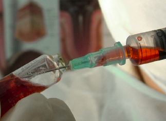

The Weakening of HIV
Could HIV's final victim be itself?
Courtney Miller
Fall 2005

HIV/AIDS is one of the largest and most catastrophic pandemics of the
past century, claiming the lives of over 20 million people worldwide in
just two decades. However, after millions of dollars and decades of
searching for a cure, some scientists now claim that in as little as 50
years, the HIV/AIDS virus will be a disease of the past.
A recent study published in the Journal of
International AIDS Society confirms this fact. Researchers compared 24
strains of the untreated HIV-1 virus from 1986-1989 and 2002-2003,
looking closely at chemical composition and apparent harm to the body.
They found that an overwhelming 75 percent of the strains had decreased
significantly in both strength and aggressiveness over the past twenty
years.
These findings have profound effects for the future
of the HIV virus. Researchers estimate that within the next 50-100
years the virus could grow so weak that it would be completely
ineffective within the human body. A person could host HIV-1 without
even feeling side effects as their body naturally killed off the
remainder of the virus.
Although promising, this theory is by no means
conclusive. While these findings do not offer much hope for a cure to
patients today, the news could not come soon enough for areas such as
Africa and parts of East Asia, which have been hit especially hard by
this disease.